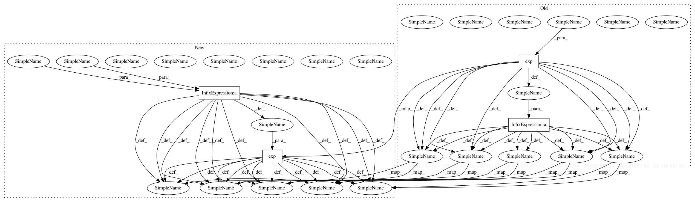

dec15d6ab015f59c25d5f7de6c56efa9ee8e3812,mnist_permuted/rwa_model/score.py,,,#,24
Before Change
a_newmax = tf.maximum(a_max, a)
exp_diff = tf.exp(a_max-a_newmax)
exp_scaled = tf.exp(a-a_newmax)+tiny_offset
n = tf.mul(n, exp_diff)+tf.mul(z, exp_scaled) // Numerically stable update of numerator
d = tf.mul(d, exp_diff)+exp_scaled // Numerically stable update of denominator
h_new = activation(tf.div(n, d))
a_max = a_newmax
h = tf.select(tf.greater(l, i), h_new, h) // Use new hidden state only if the sequence length has not been exceeded
ly = tf.matmul(h, W_o)+b_o
py = tf.nn.softmax(ly)
////////////////////////////////////////////////////////////////////////////////////////////////////////////////////////////////////////////////////////////////////////////////////
// Analyzer
////////////////////////////////////////////////////////////////////////////////////////////////////////////////////////////////////////////////////////////////////////////////////
// Cost function and optimizer
//
cost = tf.reduce_mean(tf.nn.softmax_cross_entropy_with_logits(ly, y)) // Cross-entropy cost function
// Evaluate performance
//
correct = tf.equal(tf.argmax(py, 1), tf.argmax(y, 1))
accuracy = 100.0*tf.reduce_mean(tf.cast(correct, tf.float32))
////////////////////////////////////////////////////////////////////////////////////////////////////////////////////////////////////////////////////////////////////////////////////
// Score
After Change
u = tf.matmul(x_step, W_u)+b_u
g = tf.matmul(xh_join, W_g)+b_g
a = tf.matmul(xh_join, W_a)+b_a
z = tf.mul(u, tf.nn.tanh(g))
a_newmax = tf.maximum(a_max, a)
exp_diff = tf.exp(a_max-a_newmax)
exp_scaled = tf.exp(a-a_newmax)
n = tf.mul(n, exp_diff)+tf.mul(z, exp_scaled) // Numerically stable update of numerator
d = tf.mul(d, exp_diff)+exp_scaled // Numerically stable update of denominator
h_new = activation(tf.div(n, d))
a_max = a_newmax
h = tf.select(tf.greater(l, i), h_new, h) // Use new hidden state only if the sequence length has not been exceeded
ly = tf.matmul(h, W_o)+b_o
py = tf.nn.softmax(ly)
////////////////////////////////////////////////////////////////////////////////////////////////////////////////////////////////////////////////////////////////////////////////////
// Analyzer
////////////////////////////////////////////////////////////////////////////////////////////////////////////////////////////////////////////////////////////////////////////////////
// Cost function and optimizer
//
cost = tf.reduce_mean(tf.nn.softmax_cross_entropy_with_logits(ly, y)) // Cross-entropy cost function
// Evaluate performance
//
correct = tf.equal(tf.argmax(py, 1), tf.argmax(y, 1))
accuracy = 100.0*tf.reduce_mean(tf.cast(correct, tf.float32))
////////////////////////////////////////////////////////////////////////////////////////////////////////////////////////////////////////////////////////////////////////////////////
// Score
In pattern: SUPERPATTERN
Frequency: 3
Non-data size: 4
Instances
Project Name: jostmey/rwa
Commit Name: dec15d6ab015f59c25d5f7de6c56efa9ee8e3812
Time: 2017-03-13
Author: jostmey@gmail.com
File Name: mnist_permuted/rwa_model/score.py
Class Name:
Method Name:
Project Name: jostmey/rwa
Commit Name: dec15d6ab015f59c25d5f7de6c56efa9ee8e3812
Time: 2017-03-13
Author: jostmey@gmail.com
File Name: mnist/rwa_model/score.py
Class Name:
Method Name:
Project Name: librosa/librosa
Commit Name: 48a579ae1638f5c60e62d8f5c3bad35e0dcef249
Time: 2013-03-23
Author: brm2132@columbia.edu
File Name: librosa/beat.py
Class Name:
Method Name: onset_estimate_bpm